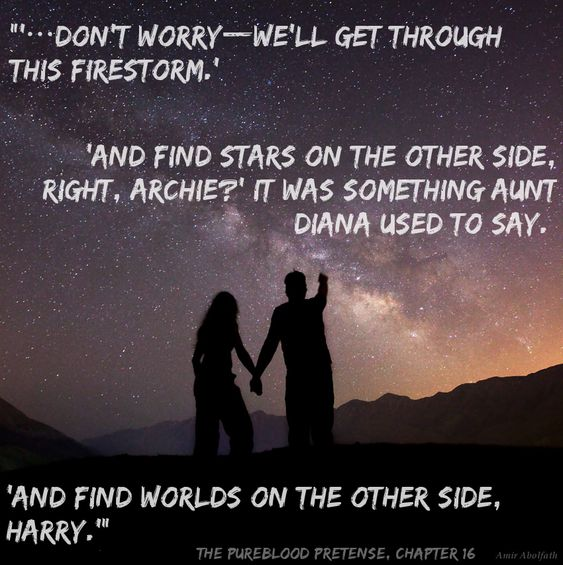

Chapter 16

Winter Break
Rigel stared out the window at the blurred countryside as the Hogwarts Express sped toward London. She’d passed her finals (despite her wand’s minor rebellion during DADA in which Quirrell’s dummy was once again blasted into smithereens), packed Archie’s trunk, and patiently let Pansy dress her for meeting her parents at the station. Neville and Ron had made their goodbyes on the Hogsmeade Platform before Draco and Pansy had ushered her into a compartment where Nott, Zabini, and Greengrass were already waiting. Her friends were still a bit sore with Gryffindors in general for what Lee had done and tried to do, but Rigel thought mostly Neville and Ron understood. Most of Gryffindor House was at least uneasy about the whole incident, which of course, in that peculiar way of schoolyard gossip, had spread like wildfire through the student body while leaving most of the adults in and outside of the school completely ignorant about it. In fact, almost everyone in the lion House either avoided Rigel or treated her like glass, so keen were they to prove to the Slytherins that they meant their first-year no harm. The Prank War had taken a toll on everyone, and no one was rearing to start it up again.
The compartment door burst open, making all six of them start.
“Puppy!”
Fred darted into the compartment, grabbed Rigel by the arms and lifted her bodily from her seat. He pivoted and tossed her across the room in one smooth movement, ignoring the other Slytherin first-years’ gasps and glares of indignation and Rigel’s resigned sigh at the sight of him.
George, who had been standing by the door, caught her easily by the waist and set her down in front of him with a magnanimous grin. Rigel wasn’t particularly impressed. Fred and George, in direct contrast to the rest of their House, had taken to treating her like a chew-toy, partly because they could, having hit a growth spurt sometime when she wasn’t looking, and partly so that she didn’t start believing she was as delicate as everyone had been treating her.
Or so they said.
Rigel thought there was a chance they’d been just as upset and worried as everyone else had been, and she couldn’t imagine the additional stress of thinking one of their friends had been trying to hurt another had helped at all. She rather thought that pulling, bumping, and even tossing her around was their way of assuring themselves that she was real and okay, and so she waved off Pansy’s concerned look and Draco’s disapproving scowl and stepped out into the hallway, knowing the twins would follow.
“I did say goodbye yesterday,” she reminded them.
“We missed you already,” Fred said, so seriously that she knew he was joking, “So we’ve decided to kidnap you and take you home to the Burrow with us.”
“I suppose it would be difficult for you to survive the break without me if this is the result of only a day of withdraw,” Rigel pretended to think about it.
“If you came with us, Mum would feed you until you’re too fat for us to play catch with,” George said persuasively.
“That would be nice,” she admitted, “And just think of all the studying Percy and I could get done if we had the whole break together.”
Fred sighed forlornly, “We’ll have to try harder next semester, Fred. It doesn’t seem we’ve got anywhere with this pup.”
“I daresay you’re right, George,” George said, “He’s definitely not ready for the Burrow yet.”
They gazed apologetically down at her.
“Sorry, pup, but we can’t kidnap you after all.”
“Forgive us for failing you.”
Rigel solemnly absolved them, and after a suitably flowery and artificial-tear-jerking farewell she rejoined her compartment.
“Done playing the Gryffindor lapdog?” Greengrass asked as Rigel came back in.
“A true lapdog’s work is never done,” Rigel reclaimed her seat unconcernedly.
“Well, I suppose you’d know,” Greengrass sniffed, a snooty expression pinching her otherwise passable features.
“Yes, and I suppose you wouldn’t, so…” Rigel trailed off, but Draco had no trouble finishing the sentiment.
“So why are you even bothering us with your opinion?” he glanced pointedly at the door and the offended girl marched indignantly off to find her more understanding friends.
“Vapid little chit,” Zabini muttered once Greengrass had gone, “The girls in our year are particularly insipid.”
Pansy angled her chin in a poised challenge and Zabini gestured with apologetic dismissal, “Not you, Parkinson, obviously. I doubt Black and Malfoy would hang around you all day if you were a twit.”
Pansy inclined her head magnanimously and Nott laughed, “They’ll grow out of it… eventually.”
“Merlin willing it will be before we’re married off to one of them,” Draco shuddered dramatically.
Rigel tried to hide her distaste at the idea of arranged marriage, but she didn’t quite manage it.
“Ah, but your father would look down on that sort of practice, wouldn’t he, Black?” Zabini’s mouth curled into a strange smile, “No underage betrothals for you to worry about.”
Rigel shrugged, “Dad’s never mentioned it. I doubt any of the families old enough to still believe in the practice would accept the son of a blood traitor for their daughters in any case.”
“You might be surprised,” Pansy said darkly, “All the other girls talk about in the dorms is prospective matches—everyone’s name comes up sooner or later.”
“We’re eleven,” Nott rolled his eyes, “Everything but our last names is going to change completely in the next few years, and even family fortunes can fluctuate without warning. It’d be mental to make a decision now.”
“They won’t have a say anyway,” Draco added, “Their fathers will take whoever offers the most money for them, as usual.”
Pansy scowled and Rigel patted her arm comfortingly, “We won’t let you get married off to any of these duffers, will we Draco?”
The others laughed as Pansy put on a mopey-eyed stare and affected a breathy, oxygen-less tone, “My hero. How will you save me? Fight a wizard’s duel for my honour? Battle my father’s dragon-riding legions?”
“Marry her yourself?” Zabini’s smile was even more twisted than usual.
“Alas, I am already married to my Potions,” Rigel gazed forlornly into Pansy’s dejected face, “But fear not, sweet maiden, for at the slightest lift of your brow I shall break my solemn vows and whisk you away to Bora Bora and keep you locked in my bungalow where an army of house-elves will feed you mangos and where the sun cannot taste your innocent skin, so that every shade of palest pink I find in your ivory cheeks I can claim as my own. When the moon lifts her veil we will frolic like spring lambs in the surf, sipping on coconut nectar and crying our freedom to every wind, that they may carry news of our incandescent happiness to our unfortunate friends, who shall still be trapped like lonely rats behind their white picket fences and will perhaps waste away with sick envy when they hear the echoes of our joy on the breezes off the sea.”
“This will of course please us greatly,” Pansy agreed, her bright blue eyes twinkling with suppressed mirth, “For in our generous hearts we wish nothing more than for our friends to escape the dreary existence of arranged marriage life as well, even if death is the only door unlocked to them.”
Pansy’s words proved to be too much, and the stiff good breeding of the usually tightly coiled snakes collapsed beneath sheer farce and they burst into laughter. Rigel listened very closely, for it was not the controlled chuckles or the measured, faint-minded laughter of the socially repressed. It was the sound of surprised enjoyment, of childhood, and Rigel savoured it before it died away.
“Sometimes I wonder if you were really raised by the Marauders, but then you do something like that,” Nott dabbed at his streaming eyes with a handkerchief, “Imagine, keeping house-elves in Bora Bora to feed you like some despoiled emperor. You’re crazy, Black.”
“All the Blacks are crazy,” Rigel said regretfully, “But we always do right by our friends.”
“And that’s why the Malfoys are there to step in and save their friends from the Blacks’ idea of saving,” Draco said, still smiling a bit at the ridiculousness of it all, “Pans, the minute this idiot starts talking about the French Polynesian islands, I will lock him up and send you my father’s lawyer. No marriage contract will stand a chance.”
Pansy laughed along with the others, but from the steady look in Draco’s eyes as he smiled and the burning embers in Pansy’s own when Rigel glanced at them, she realized that Draco was entirely serious in offering the not-insignificant Malfoy protection to his friend of only a few months, and Pansy, sweet, innocent Pansy, knew the very real possibility of having to draw on that aid one day, and was silently grateful.
Not long after, the train pulled into the station. Pansy fussed with Rigel and Draco’s hair and robes as they waited for the other passengers to depart and leave the platform empty enough to move through easily. They’d all had Pucey shrink their trunks, and when Pansy declared it time they bade farewell to Zabini and Nott and disembarked the train.
“Your parents aren’t coming until later, right?” Pansy asked Rigel nervously.
Rigel raised an eyebrow in amusement, “Yes, Pan, I promise my family won’t be around to murky the waters. I told my dad to come a half-hour later so I could say goodbye to all my friends on the platform without my dad around to embarrass me.”
“A plausible fiction,” Draco commented, looking as if he wasn’t sure if he should be happy his friend lied so well or not.
In truth Rigel had told Sirius to give her forty-five extra minutes, saying she had a lot of people to say goodbye to, in order to give herself enough time to use the Polyjuice after her friends had gone. Archie had done something similar, arranging for his parents to meet him at baggage claim instead of right where the passengers got out so he’d have time to duck into a restroom and change. Archie had figured that Hermione would be the only one looking for him and since she didn’t know what his luggage looks like (girls weren’t allowed in the boys’ rooms) and didn’t know what the Potters looked like, she wouldn’t think it odd when an unfamiliar girl picked his trunk up instead. Then all they had to do was keep sipping Polyjuice until they could meet up and exchange places.
“There they are,” Pansy nodded discreetly toward four imposing figures standing off to one side, well clear of the smoke from the train.
The Malfoys were easily recognizable, resplendent in soft lavender silk, their hair so matched in colour that Rigel wondered if that had been the deciding characteristic when Mr. Malfoy was choosing his wife. The Parkinsons were striking also, but not for their similarity. Mr. Parkinson was tall and lean, with jet-black hair combed back from his angular features and a sharp pair of glasses that glinted every so often in the light. Mrs. Parkinson was petite and energetic, with caramel curls bouncing about her shoulders and the dreamiest hazel eyes Rigel had ever seen.
The two were complete opposites, and Rigel wasn’t sure at first how Pansy could be related to either of them. She supposed later that Pansy must have inherited her golden hair from a relative, or else one of her parents dyed theirs. Her personality, Rigel would realize later, was a strange fusion of her mother’s innocent sweetness with her father’s savvy insightfulness, tempered by a dash of something entirely Pansy.
“Good day, Mr. Malfoy, Narcissa,” Pansy said politely when they were within speaking range, “Hello Father, Mother.” Pansy’s mother reached out a hand, which Pansy clasped and pressed gently, both mother and daughter smiling with suppressed emotion as Mr. Parkinson looked on with quiet fondness.
“How are you, Miss Parkinson?” Mr. Malfoy asked.
“Very well, thank you,” she said, stepping away from her parents once more, “Mother, Father, you remember Draco Malfoy?”
Draco stepped forward to shake hands with Mr. Parkinson and receive affectionate nods from his parents as well.
“Your son does you credit, Lucius,” Mr. Parkinson said, voice mostly devoid of emotion. He brought to Rigel’s mind a human calculator.
“So wonderful to see you again, Draco,” Mrs. Parkinson’s eyes fairly shone with her cheerfulness, though her face was the usual blank pureblood mask.
“The wonder is all mine,” Draco bowed gracefully before the couple.
“Father, Mother, may I introduce to you Rigel Black?” Pansy placed a hand gently on Rigel’s elbow, “Rigel is our Slytherin year mate, son of Sirius and the late Diana Black.”
Rigel bowed formally to Mr. Parkinson and his wife, hovering just above Mrs. Parkinson’s hand as she did so.
“A pleasure to meet you, Mr. Black,” Mrs. Parkinson said warmly, “How is your father?”
“He is well, Mrs. Parkinson, and I dare say will be even better when he learns of your kind query,” Rigel said, “I am very glad for this chance to meet you both, and I would like to formally ask your permission to befriend your charming daughter.” She directed the last bit at Mr. Parkinson, whose only sign of surprise that Rigel knew of the old customs required for an unmarried male to make a close acquaintance of an unmarried female was a sheen of light obscuring his glasses as he tilted his head consideringly.
“What say you, Mr. Malfoy?” Mr. Parkinson turned to his friend, “As you have the advantage of Mr. Black’s acquaintance I shall defer to your judgment.”
Mr. Malfoy gazed seriously into Rigel’s blank face for a moment, then said, “Although I have only had the pleasure of a brief meeting with young Mr. Black, he has the esteem of Severus Snape, a man whose opinion I trust implicitly, so I will indeed vouch for his worth in regards to your daughter’s friendship.”
Rigel bowed gratefully toward Mr. Malfoy before lifting her chin in open acceptance of Mr. Parkinson’s decree.
“With such a recommendation, I would be foolish to turn your candidature away, Mr. Black,” he finally decided, “May your friendship be long and mutually beneficial.”
Rigel nodded and Pansy positively beamed at her. Even Draco looked impressed that she knew the proper courtesies. They couldn’t know I looked up every pureblood custom in the Black family library after deciding to try and pass as one.
Mrs. Parkinson’s blank mask melted away into a smile as bright as her daughter’s, and she stepped forward to embrace Rigel warmly, even going so far as to straighten a curl or two around Rigel’s ears as she leaned back, “Wonderful, simply marvelous,” she said excitedly, “Now that we’re all friends here, tell us about your first semester. I know Narcissa and I are dying to hear about all your adventures.”
“What makes you think we had any adventures to speak of?” Pansy asked innocently.
“Oh, yes, why ever would we imagine that our children, along with the son of Sirius Black, would be involved in anything that could be considered exciting or dangerous?” Mrs. Parkinson shared a knowing look with Narcissa.
“Come, Draco, your letters have been unusually vague of late,” the blond woman smiled teasingly, “You wouldn’t want your parents to think you were hiding anything, would you?”
Draco and Pansy sent Rigel uncomfortable looks, and Rigel suddenly realized that for all Draco’s claims that he would be using their friendship to spy on her, neither he nor Pansy had told their parents about any of the interesting things that had happened over the semester in order to protect her privacy. She was honoured that they considered her friendship so highly, and so to repay them she would remove them from the position of having to lie to their parents. No child should have to keep secrets from a parent; she knew from experience.
“I’m afraid that’s entirely my fault, my ladies,” Rigel turned to smile self-deprecatingly at the adults, but from the glint in Malfoy Sr.’s eye and the slight lifting of Parkinson’s brow she knew they had witnessed the silent exchange among the three first-years.
“Oh?” Mrs. Parkinson laughed, a light, tinkling sound that Rigel didn’t doubt was entirely natural for her, “When the son of Sirius Black claims the blame for something I am sure it must be quite a tale.”
“It is nothing so entertaining, Mrs. Parkinson,” Rigel demurred.
“Please, I am Rose,” she said, foggy eyes mischievous, “And I think perhaps you overestimate the bar at which something becomes amusing to us old timers. We need all the entertainment we can get, you know, and I think we are well prepared to handle it.”
“For shame,” Rigel said, dismayed, “What cad has put such ideas of aged dotage into so fine a queen’s royal head? I admit I was hesitant to burden so lovely a heart with darker tidings, but I will of course defer to the Goddess’ command.”
“Darker tidings? How ominous of you, Rigel,” Narcissa lifted a corner of her regal mouth to invite continuance, “But surely it could not be so terrible if we parents had not been sent word of it.”
“Indeed, not even your esteemed Headmaster would keep news of a child’s well-being from his family,” Mr. Malfoy’s eyes hardened slightly, and Rigel had to think fast to avoid that particular pit-snare.
“The good Headmaster would surely be loath to trouble you with news unrelated to your own son,” Rigel suggested, “The more exciting events of the past semester have left Draco and Pansy completely unscathed, this I can assure you.”
“And was your family equally assured of your own good health?” Rose pressed, her misty eyes inexplicably piercing.
“My father was of course kept abreast of all happenings,” Rigel said evenly, “He will be honoured to know of your consideration.”
Draco eyed Rigel disapprovingly, but wouldn’t outright say that she was being deliberately obtuse. Pansy’s father had no such qualms.
“Her consideration was for you, Mr. Black, not your father,” Mr. Parkinson said sharply, “As Pansy’s friend, you must know that what is in your best interests is in our daughter’s best interests. If you’ve been involved in something that could even potentially have ramifications on our daughter’s life, it is your responsibility to make her family aware of it, that they may better protect her. The same applies to your friend Draco, as well.”
“Father, it isn’t Rigel’s fault,” Pansy protested.
“Cassius,” Rose added in a low voice, gently admonishing her husband.
“No, ma’am, he’s right,” Rigel nodded her head respectfully toward Pansy’s father, “It was unforgivably selfish of me to entertain the conceit that my troubles do not affect those around me.”
“I’m certain this is just a case of much ado about nothing,” Narcissa said lightly, “What kind of politically charged intrigues are you imagining to have occurred in a schoolyard, Cassius?”
“One can never be too careful with one’s children,” Mr. Parkinson said, “And if Mr. Black has no qualms, I would rest easier knowing the full story behind my daughter’s cryptic letters this semester.”
“I admit to some interest in this as well,” Mr. Malfoy said, his face giving nothing away, “Severus has made some rather infuriatingly offhand references to events around Halloween that I cannot begin to guess at, and your name was thrown in amongst them, Mr. Black.”
Rigel glanced at her friends, both of whom nodded seriously to show they would support her telling their parents.
“It begins and ends with Lee Jordan, Mr. Malfoy,” Rigel said, “As a member of the Board of Governors, you were no doubt made aware of his withdrawal?”
“His family has transferred him to Beauxbatons, yes,” Malfoy frowned, “No reason was cited, though the Headmaster did not seem overly keen on asking questions.”
“In truth, it was closer to an unofficial expulsion,” Draco clarified, wincing slightly at the look his father gave him. There would be words when they got home about the family’s position of superiority where loyalties conflicted.
“There hasn’t been a student expelled from Hogwarts in fifty years, and the last time it happened a student was killed.” Mr. Parkinson said, his mouth a severe line.
“No one died,” Pansy reassured her father quickly, “It was a matter of honour. Staying meant disgrace to Jordan’s family and the possibility of criminal charges.”
“What did he do?” Rose asked quietly, “And how is Rigel involved?”
Rigel didn’t miss the transition to her first name, but she didn’t comment on it. Instead, she explained as shortly as she could, “Lee Jordan didn’t care much for my father, and I’m afraid that enmity was transferred to me. Unfortunately, he took his dislike too far, and his actions caused enough harm that his continued presence in the school was considered unsafe. He didn’t get near Pansy or Draco,” she added, “And now that he has transferred the matter is satisfactorily resolved.”
Draco and Pansy emitted identical scoffs of righteous indignation, and Rigel smiled wryly at them. They were just so similar, though in cases where they ganged up against her it was somewhat less endearing.
“He nearly killed you, Rigel,” Draco said softly.
“He was attempting nothing of the kind,” Rigel said firmly.
“Oh, yes, because permanent disfigurement isn’t at all a cause for alarm,” Pansy sniffed.
“I was talking about when you fell down three flights of stairs,” Draco was glaring fiercely at her now for treating everything so unconcernedly, “And perhaps you’ve forgotten the night you almost drank acid because of that—”
“Acid?” Narcissa’s hand flew to her husband’s elbow, where he gripped it steadily.
“That must have been what Severus was speaking of,” Malfoy said thoughtfully, eyes glittering with something Rigel couldn’t define, “He asked me to put an ear to the ground for any un-reclaimed shipments of those joke tablets Jordan was written up for.”
“The ones that didn’t have the proper anti-amending charms on them?” Mr. Parkinson asked, “Dangerous things. I suppose Jordan’s son managed to smuggle some into Hogwarts.”
“Not only that,” Pansy put in angrily, “He slipped one that was modified to turn solutions to highly corrosive acid into Rigel’s pumpkin juice.”
All four parents looked deadly in that moment.
“So it could have been any of you,” Parkinson said darkly, pinning Rigel with a half-accusing stare, “What if Pansy or Draco had drank from the wrong cup? I think you’d best explain everything.”
Rigel sighed inwardly, “Perhaps Draco and Pansy can explain everything once you are comfortably at home,” she said, “It is a rather long story, and I had hoped our first meeting would be entirely pleasant.”
“Yes, let’s talk about something else, dear,” Rose said brightly, “We’ll speak of sad things when we must, but I heard that young Mr. Malfoy made the Quidditch team this year, and I’d much rather hear about that.”
“Only the reserve team,” Draco said, smiling proudly nonetheless, “In a few years I’ll be Slytherin’s starting seeker, though.”
Mr. Parkinson looked like he wanted to protest the change in conversation, but one glance at his wife had him pursing his lips and playing along, “Your father played himself when he was at school, didn’t you, Lucius?”
“Chaser,” Lucius agreed, “It was the only way I could capture this lovely creature’s attention.” He smiled charmingly down at his wife, who blinked up at him as if to say, It was no more than I deserve. The group chuckled easily at the pair, and the conversation became smoother from there.
“What about you, Rigel?” Rose asked, “Did you try for the team?”
“No, my lady,” Rigel said, “I prefer to focus my energies elsewhere.”
“But you had a broken wrist this year,” Draco said reasonably, “If you can stay on a broom with one hand you’re not a half-bad flyer.”
“Indeed, I was under the impression that you were an avid Quidditch fan, Mr. Black,” Parkinson adjusted his glasses and Rigel tried to think how he might have got that impression. It was true that Archie loved Quidditch, though he much preferred watching to actually playing, unlike Rigel, who loved playing more, but no one outside the family really knew anything about Archie, except…
“Are you per chance familiar with the Flint family?” she guessed.
“Flint was at school with us,” Parkinson confirmed, his face revealing neither fondness nor hostility toward the man, “Rose and I happened upon he and his son at the Quidditch World Cup five years ago, and they mentioned you.”
“I believe young Marcus Flint told us in no uncertain terms that he was saving the seat next to him for his friend Archie, even though he wasn’t actually coming,” Rose smiled fondly, “Such a sweet boy.”
Draco lifted his brows in patent disbelief, no doubt thinking that nothing was sweet about Captain Marcus Flint.
Rigel remembered that year all too well. Archie and she were six, and he had got a seat in one of the highest boxes in the stadium. Rigel had never wondered how he’d got it, but now she knew the Flints must have had an extra and invited Archie, who they already knew from the Wasp games, to join them. Unfortunately (for both Archie and Rigel, who had to listen to him sigh sadly about it the rest of the summer) Archie never got to go.
“Yes, the Flints kindly offered me a place in their box, but due to an unexpected turn of events I was unable to attend that year. Marcus declared me an honourable attendee on the spot and brought back a picture of my empty seat to give to me as a souvenir at the next Wasps match.” Rigel said as evenly as she could.
In truth, the week before the Cup was the first time Diana, Archie’s mother, had fallen ill. At first, no one knew what it was. She recovered after a week or so and no more was thought of it. Until she fell ill again. And again. It wasn’t until nearly eight months later that they had confirmed test results, simply because they hadn’t known what to test for. When the news that it was a terminal sickness came, the family was devastated. Aunt Diana held on for over a year, but at eight years old Archie had clung to Harry’s hand and watched, dry-eyed with hollow resignation, as his mother was lowered gently into the waiting earth.
By the looks on everyone’s faces, they had put the timelines together in their heads and knew as well as if she’d said it straight out why the younger Black hadn’t made it to that Quidditch game.
Determined to break the awkward silence, and knowing that no one else would have the heart to, Rigel smiled as brightly as she could manage, “Draco’s tryouts were almost as good as a Cup game, though. Flint was determined to scare the wits out of the Gryffindor team, so he turned the trials, which as you know are always spied on, into a sort of high-flying melee. Remember, Pansy?”
“How could I forget?” she said, an affected look of mild scandalization on her face. Rigel grinned at her for playing along and got a slow wink in return, “He unleashed four bludgers and three snitches. I thought someone was going to be hurled to the ground for certain.”
“My goodness,” Narcissa’s mouth was poised with amusement, but her eyes were sad. Rigel felt extremely uncomfortable being on the receiving end of compassion for Archie’s mum, but she was grateful that Narcissa was helping them move past the gaping wound that was Aunt Diana’s passing despite the fact that Draco had probably told her all about his tryouts in one of his many letters. “Hogwarts Quidditch sounds much more dangerous than it was in our day.”
“It was fine, mum,” Draco said, “It was just to scare off the Gryffindors, like Rigel said. Nothing really dangerous about it.”
“Well, if you say so, darling,” Narcissa looked the very picture of a mother concerned for her child’s safety, and Rigel thought it was almost funny how human all these purebloods were turning out to be.
The conversation moved to other things, and before they knew it Rigel had to excuse herself to meet her dad. She said heartfelt goodbyes to Draco and Pansy and wished their parents a relaxing holiday. Glancing at one of the train station’s clocks as she left the platform, she realized she had ten minutes to meet Sirius at an out-of-the-way café just down the street from King’s Cross Station.
Rigel ducked into a public restroom and stepped into a stall. She took one of the precious vials of Polyjuice out of her pocket and mixed in a strand of Archie’s hair. Taking a deep breath and grimacing at the smell the electric blue (Archie would be such a jarring shade) goop gave off, Rigel knocked back the dose in one quick movement. A few years of this and I’ll be able to take shots of Firewhisky like it’s water, she mused in the seconds before her insides were set on fire. Her guts felt like they were twisting around inside of her, and Rigel supposed it made sense if the theory behind Polyjuice was that it changed you inside and out. She wondered if the pain would be less if she wasn’t switching sexes, and then she had no room in her skull for wonderings as the burning sensation moved to the outside of her skin and she felt her limbs lengthening an inch or two, her shoulders widening a bit and her facial features shifting ever so slightly. Really, she shouldn’t complain. If they were still doing this in a few years, the differences would start getting really pronounced, and it was lucky they looked somewhat similar to one another already.
An uncomfortable burning in her eyes well after the burning everywhere else had stopped made Rigel curse her own stupidity and stumble to the sink to take the contacts, which no longer fitted, out of her eyes. Staring back from the mirror was her cousin, Archie, with a few small differences from when she’d last seen him, like longer hair and less musculature tone in the arms. She’d have to make sure he started exercising since he wasn’t playing Quidditch anymore.
Sirius was waiting in the café like he’d promised—if by waiting one meant casually flirting with one of the waitresses. It actually warmed her heart to see his dashing devil-may-care grin lighting up the shadows that never seemed to leave his face, but she did feel a bit sorry for the pretty waitress when Sirius’ attention waned the instant he caught sight of his “son.”
“Archie!” Sirius leapt off the stool he’d been sitting at and bounded over like the overgrown puppy he so often was. He scooped her up and swung her around him in a circle, for all the world not noticing that his kid wasn’t six years old anymore. Several patrons narrowly avoided being broadsided by Rigel’s trainers, and if she hadn’t already changed from her Hogwarts robes they would have caught on any number of things on the café tables. “You’re back! And all in once piece, despite the attempts you’ve made to the contrary. Now I know what Lily feels like all the time—and it’s awful! All this worrying is going to turn my hair grey. It’s not grey, is it? Here, look at the roots for me, I’m a little worried about this section in the back because I can’t really see it properly—”
“Dad!” Rigel pushed Sirius’ head of perfectly black hair out from under her nose, “Your hair is fine, better looking than everyone else’s put together, I swear. Honestly, you wonder why I asked you to meet me away from the platform.”
If his face hadn’t been so close to hers already, she wouldn’t have seen it. A spark of something surprised and almost shamed flitted across her Uncle’s grey irises and Rigel felt instantly like an arse.
“No, I mean, I didn’t mean it like that, Dad,” she backpedaled quickly. She had spoken without thinking, teasing like she would have if she were Harriet, not Archie, who had always had a peculiarly frank relationship with his father. Of course that’s how it would look, asking Sirius not to pick her up from the station.
“It’s cool, Arch,” Sirius laughed, slinging an arm around her shoulders carelessly and leading them out of the café and onto the busy sidewalks, “I get it. Between House rivalries and politics and everything—well, when I was your age, I didn’t want my parents within ten miles of my friends.”
“No!” Rigel pulled Sirius off to the side out of people’s way, determined to stop this right in its tracks before she damaged Archie and Sirius’ relationship beyond repair.
“Hey, kiddo, it’s no big deal,” Sirius said, his voice betraying not a hint of the hurt she suspected lay beneath the surface.
“It is if that’s what you think,” Rigel said. She turned to face Sirius and looked very… seriously at him. “Dad, I love you. It’s not anything like it was with your parents. I’m not ashamed of you or embarrassed by you in any way—I think you’re the greatest, bestest, most charming, fun, magnificent, caring, cool—”
“You forgot devilishly attractive.”
“—hilariously amazing dad in the whole world,” Rigel continued, pretending not to notice how Sirius preened under her praise, “I was only joking back in the café—spent too much time around Harry, I think—and I didn’t keep you from the station because I didn’t want everyone to see you picking me up. I tell all my friends about you, all the time. The Weasley twins worship the ground you walk on, you know, and Draco and Pansy would have loved to meet you.”
“Then… why?” Sirius didn’t look hurt or uncomfortably cheerful anymore, just slightly confused.
“Because, I was selfish,” Rigel said, grimacing. She hated lying to Sirius, he was second only to Remus and her mother on the list of people she hated lying to. “Everyone at school knows you—or thinks they do. You’re famous for your joke line, your Auror career, and yes, also your family. The truth is, I was meeting Pansy and Draco’s parents at the station. I wanted to make a good impression—and I’m not saying I don’t think you’d give a good impression, because you would, Dad, but I wanted to make a good impression on my own, you know? I wanted them to like or dislike me for me, not because my dad, the Head of the House of Black was there. My friends mean a lot to me, and I didn’t want to muck up my first meeting with their parents by putting you in a position that would go against the Great Split and putting them in a position where they had to treat me like they’d treat you, and vice versa.”
“Oh,” Sirius put his hands on his hips and tapped his fingers against his denim-clad waist restlessly like he always did when he thought hard about something, “Okay, I can understand that. Though, you know I never took the Split all that seriously, not that I’d ever tell Lily and James that. Some of them are alright, you know.”
“Yeah, I know,” Rigel smiled Archie’s easy smile at Sirius, “And I know you wouldn’t have done anything to make it uncomfortable, dad, but you know how some people can be. I just wanted everything to go smoothly, but I should have told you. Did I hurt your feelings?” she asked the last bit slyly and Sirius sucked in an affronted breath.
“Why you little—hurt my feelings? I could have sworn that letter said you were a Slytherin, not a Hufflepuff,” he sniffed, and started stalking away.
Rigel laughed like Archie would and started after him.
“Narcissa Malfoy asked after you,” she commented as they strolled through London, looking for a good apparition point.
“Did she?” Sirius smiled genuinely at that, “How is dear Cissa?”
“She’s good, as far as I can tell. Was she always that blonde? Because all the other Blacks are, well, black-haired, aren’t they?” Rigel asked curiously.
Sirius chuckled, “Oh yes, she gave my uncle Cygnus quite a shock when she came out Malfoy-blonde. Nearly called a formal duel with old Abraxas until they realized Cissa had exactly Cygnus’ nose. And of course the Paternity Potion helped a lot, too. I believe when Lucius asked for her hand Aunty Druella told him to have at it, on account of Cissa had clearly been meant for a Malfoy all along.”
Rigel grinned at the sound of Sirius’ carefree laughter. Her uncle really was doing much better.
“So how’s Marcus?” Sirius asked once he’d side-apparated her to Grimmauld Place, “You see him around much?”
“Sometimes,” she said casually, as if she didn’t have a mountain of the older boy’s homework in her trunk at that very moment, “He’s captain of the Quidditch team, of course, so I see him at Draco’s practices, but the upper years don’t mix much with the lower years.”
“Yeah, especially in Slytherin,” Sirius said, a far-off look in his eyes, “I remember Regulus going on and on about what an honour it was to be asked to sit with the Lestrange brothers on their side of the House table when he was only a third year.”
Rigel said nothing, knowing that Regulus was an uncomfortable subject for Sirius. She’d only seen Sirius’s brother once, at Aunt Diana’s funeral, but she knew he’d joined the Cow Party while still in school and severed almost all ties with Sirius as a result.
“But it’s good he’s well,” Sirius went on. They were shedding their coats and scarves in the entryway now, and Rigel sneaked another dose of Polyjuice while Sirius was struggling with his boots, “It’s best if he gets away from that house of his for the school year. He doesn’t come home for breaks, does he?”
“No,” Rigel said, remembering Flint signing up for the staying roster.
“Good,” Sirius kicked his boots off to the side and then stood back and gestured to the hallway, “So? What do you think?”
Rigel glanced up from fishing her tiny trunk out of her pocket and her jaw dropped. “I thought Remus was kidding. I thought you were kidding.”
“Course not,” Sirius gave her a look that said she clearly should have known him better and she noticed he was positively wriggling with delight, “Your Sorting opened up a world of decorating possibilities here-to-for unexplored, so we just went to town! Do you like it? Feel right at home?”
The hallway where the heads of house-elves once hung looked like it had been a victim of a sudden tinsel storm. It hung like silver and green moss from the torch brackets, the chandeliers, the banisters, the doorframes, and it was strewn about the carpet like a sparkly grass meadow welcoming them into some sort of Slytherin-inspired fun house that any real Slytherin would be appalled at.
“Wow, Dad, I don’t know what to say,” Rigel just stared and stared at it.
“Yes, I can see you’re overwhelmed,” Sirius said, “Let me give you the full tour!”
He showed her the parlour, with its green brocade couches and tapestries so silver they were practically mirrors. They saw the kitchen with its new silver dishes (to replace the gold ones they’d been eating off of before) and the little snake salt and pepper shakers that hissed when you shook them. The library had been painted in electric green and metallic silver stripes, and Rigel made a mental note not to spend too long in that particular room if she didn’t want her vision to get any worse.
Archie’s bedroom was more tasteful, done over in deep, soothing green with subtle silver highlights in the doorknobs and the hangings, and Rigel had hope for the place until she saw the green, glow-in-the-dark toilet paper in the bathrooms and the stuffed snake pillow on the bed. Nevertheless, it was the garden that finally quenched her desire to admit Sirius to a facility where he would receive specialized care.
Remus had been half-truthful. Grimmauld Place didn’t have a front yard, and besides that it was in a muggle neighbourhood, so of course she’d dismissed the notion of actual snakes, dancing or otherwise, after she’d read it. More fool she. The enclosed little courtyard, which used to have Diana’s vegetable garden in it, was now home to about twelve English grass snakes, which had been magicked bright green. The enclosure had been magically enlarged and was temperature controlled so the little wrigglies (as Sirius had dubbed them) got all the sun they needed, and through her disbelief Rigel noticed that Sirius actually looked quite fond of them. When they opened the door, five or six came slithering over to them and Sirius bent down automatically to pet their heads and croon words of praise.
Rigel raised an incredulous brow, and Sirius pouted, “What? They’re highly domesticated.”
She took in their sprawled, lazy movements and playful tongue flicks, “They look a bit lethargic. I think you’re over-feeding them.”
“They get hungry!”
“Sure, Dad, whatever you say,” Rigel shook her head.
A little snake began twining up Sirius’ bare foot, and to Rigel’s surprise, it said, “Take me inssside with you thisss time, oh, One Who Sssmellsss Like Dogsss. I want to sssee where you keep the sssnacksss.”
“Oh, oh that tickles!” Sirius laughed and pulled the little snake gently off of him, “This one always climbs on me, trying to get inside the house,” he explained to Rigel, who was starting to wonder how much free time Sirius actually had if he was spelling snakes to talk to him. She’d talk to Remus about hanging out with the ex-Auror more often. Sirius had quit his job in law-enforcement when Diana fell ill, and since then he didn’t work at all, just volunteered in the children’s ward at St. Mungo’s a few times a week and lived off the interest of his family’s fortune.
“When will Harry be home?” she asked as they meandered back into the kitchen and dug around in the pantry for some lunch.
“Lily and James are picking her up as we speak, I think,” Sirius scratched his chin, “They and Remus are coming over here for dinner tonight, but Harry will probably be over earlier. You know how she is, always checking up on you.”
“Yeah,” Rigel said, the dramatic irony nearly choking her, “Well, I guess I’ll get re-settled in, then.” She rinsed her plate, feeling odd cleaning up after a meal after months at Hogwarts, “Can you come un-shrink my trunk?”
“Sure thing, Arch,” Sirius made to follow her upstairs.
“You know, I’ve been going by my middle name at school now,” she said tentatively.
“Rigel? I never knew you even liked your middle name,” Sirius said with a puzzled frown.
“Well, I’m growing up now, Dad. Archie is a bit young-sounding, but Arcturus is a mouth-full at my age, you know?” she explained, “I’ll go back to Archie or Arcturus when I’m older, I think, and I can afford for my name to sound casual, and of course you can still call me Archie at home. I just wanted you to know in case someone from school mentions me as Rigel.”
“Ah, I see,” Sirius shrugged, “Not like I can talk about nicknames—not since I was the genius who came up with Moony, but school is a time for growing, so if you want to grow as Rigel, I say go for it.”
“Thanks,” Rigel smiled cheerfully, “So how many pranks do you think we can get set up before Uncle James gets here?”
Sirius’s face split into an evil grin that Rigel hoped the Weasley twins never caught sight of, “He’ll be expecting about four, so I think we should aim for twelve or so.”
“You just like the number twelve,” Rigel pointed out.
“It’s a very austere number.”
“Which is why it doesn’t suit you at all.”
“You’d better hope I don’t set up thirteen, because the last one will be on you, little snake.”
“If I thought an old dog like you had any new tricks I might actually be scared. You forget I’ve been among the next generation of pranksters now—the Weasley twins have taught me things you and Uncle James never dreamt of.”
“Prove it!”
“You asked for it.”
“Well you’ll be begging for it.”
“For what?”
“Mercy!”
“Ah! No! Dad, where are you tickling?”
*
Archie and Rigel’s mom and dad finally showed up a few hours later, and damned if Sirius didn’t get exactly twelve pranks set up in the nick of time. Some of them were disabled right away (like the bucket of snakeskin placed over the front doorway—in keeping with the theme of the décor) and others would probably never be triggered (like the eyes of the non-moving painting of Salazar Slytherin now hanging in the dining room, which would turn your hair pink if you stared at them for longer than sixty seconds), but on the whole James had a lot of fun ferreting them out, Lily had a lot of fun scolding Sirius, and Remus had a lot of fun watching his friends get pranked and scolded. Most importantly, however, it gave Rigel and Archie the cover they needed to sneak away to Archie’s bedroom unquestioned.
“Whew, that was close,” Archie said when he’d bounded into his room and closed the door behind them. He pulled the usual chest of drawers over in front of the door and collapsed on the bed, “My ‘juice’ is about to wear off, and I didn’t fancy another hour as you, no offence.”
“None taken,” Rigel said, sitting on the bed as well, “I’ve got another ten minutes, I think. It’s good to see you.”
“Me? I’ve been worried sick about you!” Archie scowled, “And the only way I knew you weren’t maimed somehow was by adding the hair you sent to this Polyjuice and then counting the limbs after I’d changed.”
“What’s to worry about?” Rigel asked innocently, “I’m not the one running around my school yelling about trolls and stealing illegal potions.”
“Hermione stole the illegal potions,” Archie said quickly, “And I don’t know what you’ve been doing, that’s the point. James said that Dad said that you’d been attacked by another student, but he didn’t know why or how, just that you said you were alright. If it had been actually me at Hogwarts, then it would have been fine, because everyone knows I don’t hold back if something’s really wrong, but if they’d known it was you sending those letters like I did they’d be up in arms too. Do you know why?”
“Archie—”
“I’ll tell you why,” Archie said, raising his voice to cover hers, “Because even if you were dying you would never tell anyone! So you’re gonna tell me everything right now or I swear to Merlin I’ll, I’ll—Ow!” Her look alike suddenly twitched and groaned. Archie doubled over, clutching his stomach as his skin started rippling, his muscles and Merlin knew what else sliding around inside of him. Polyjuice transformations were really quite gruesome to watch from the outside, Rigel decided.
A minute or two later, a panting Archie lay in his own body on the deep green comforter.
“Well, that sucks,” he said. “But anyway, where was I?”
“Irrational demands?”
“Oh, yes,” he cleared his throat, “You will tell me every single thing that happened while you were pretending to be me and then you will listen to all the things you did wrong—and I know there’s gonna be a lot of them, because the only things you do right are Quidditch and Potions—and then you’re never to do any of it again, understood?”
“Yes, mum.”
“I… hmm, we seem to be experiencing a role-reversal,” Archie frowned, “Aren’t you supposed to lecture me about the stupid stuff I do? Must be this Polyjuice. It’s making me confused. Hurry and change so we can talk properly.”
Rigel rolled her eyes, but a few minutes later she felt her insides squirm and her skin start to burn. When she was herself again, she and Archie turned their backs and switched clothes. She looked over herself in the mirror and sighed happily. She had her favourite blue sweater on and a pair of jeans that were slightly feminine in cut and she felt true freedom for the first time in months.
“I never knew how much I liked being me,” she said reverently, accepting her glasses almost gleefully and perching them smartly on her nose where they belonged.
“I feel you,” Archie was stretching his newly-acquired limbs, “Even though all I changed was my name, I still feel much lighter now that I’m ‘Archie’ again.”
“I guess that makes me ‘Harry’ again,” she smiled. Yes. Harry. Perfect.
“Okay, Harry, then start going over this last semester with me,” Archie said, “And I don’t mean the lies you’re going to help me practice telling our parents, I mean what really happened.”
Harriet sighed, but she started at the beginning, knowing that unless Archie knew everything that transpired when she was him and vice versa they might get their stories mixed up one day, which would be catastrophic.
When she was finished, Archie blinked several times, then said, “That is so wicked.”
“What?” Harry stared at him in complete bemusement.
“Oh, not the part where you almost get your hands paralyzed, that part stinks, but your magic is so cool! It’s like you have this power in you. It just whipped out and disintegrated that bug thing,” Archie said excitedly, “And the part where your stubbed toe healed over automatically—if my magic did that I could save anyone I wanted just by wishing for it!”
“Archie, it’s not a comic book,” Harriet frowned, “This is my life, and power like this is dangerous.”
“Only to people who try to hurt you,” Archie argued, “You can’t honestly think it would turn on you.”
“What’s to stop it?” she asked, “What if I got so embarrassed one day I wished I could disappear, and then I did. What if I was mad at you, and my magic lashed out? Don’t you see? People shouldn’t always get whatever they want or even what they need, because those wants and needs conflict with other people’s wants and needs, and in the end it isn’t fairness or justice that decides, but strength.”
“So what?” Archie shrugged, “You’re acting like this power was given to Grindelwald, but it belongs to you.”
“Exactly.”
“Exactly, exactly,” Archie said, “Harry, you’re the most cool, collected, level-headed, fair—”
“Don’t forget honest,” she put in wryly.
“—just, kind-hearted—no, don’t snort at me—hard-working, deserving person I’ve ever met, and if you reach the point that your magic lashes out at someone, you can bet they’re gonna deserve it. Look at Lee. Before that it never hurt anyone,” Archie put a hand over her mouth to quiet her, his grey eyes perfectly serious, “Even when we were kids, and you used to freak out on the rare occasion that you did accidental magic, I never saw what the big deal was. You were scared it was violent and would hurt someone but it never did. It’s because deep down your magic wouldn’t do something abhorrent to you, because it’s a part of you.”
“You can’t know that,” she said quietly beneath his hand.
“I can think it,” he laughed as he wiped his hand on the bed covers, “And I certainly believe it. You’re a good person, Harry, so of course your magic is going to do good things.”
Harry thought of Snape’s wooden chair bursting into a shower of needles, then she thought about Mr. and Mrs. Malfoy, and where the line between good and not-good could be drawn, and she didn’t think it would really be that simple. But to Archie, life really was that simple, so because she couldn’t bear to spoil it for him, she changed the subject.
She had a lot to think about, but thinking about things wasn’t something she did very well. Maybe her magic was mostly benign, but the point was that it was far too independent. It was beyond her conscious control, and that meant it was beyond the bounds of traditional morality that most witches and wizards adhered to for convention’s sake. The only thing keeping the people close to her safe from her magic, it seemed to Harry, was her own inner moral compass, which, like every human being’s, could swing wildly out of synch the moment her emotions or desires diverged from her rational constraints. It was dangerous, and like all dangerous things, needed to be monitored. But how could she monitor her own unconscious? You can’t help the things you desire, can you?
Archie told her all about his year, the training he’d got in his basic Healing classes, and his friend Hermione, of whom she was expected to speak fondly. She learnt the names of his teachers, some key classmates in the Healing tract, and in turn she told him major characteristics of Pansy and Draco, Fred and George, Ron and Neville, and of course her work with Professor Snape, though she wasn’t sure if they’d be telling Sirius and James about that just yet. When they thought they were ready to face their parents again, they headed downstairs.
“There you two are,” Lily said when they found the adults lounging in the kitchen, probably because it was the room with the least garish colour scheme.
“Hi, mum,” Harry smiled happily up at the red-haired woman and stepped forward to give her a rare hug.
Lily gave her a strange look, but hugged her back briefly, “Uh, hello darling. My, my, two hugs in one day, you must have missed me more than you let on,” she teased.
Harry smiled sheepishly at her mother but inside she was wincing. Of course “Harry” already hugged her mum at the airport. She berated herself for thinking she could relax now that she was herself again. This was the most crucial stage. This is where the two lives overlapped, with the people who knew them best, and where they had to explain away any discrepancies. She had to keep her wits.
“Archie, come here, I barely got to see you before you ran off upstairs,” Lily said, hugging Archie warmly, “Harry, aren’t you going to give your Uncle a proper hello?”
Harry felt extremely foolish for going over and hugging Sirius as if it were the first time she was seeing him that day, but she greeted him in her usual manner, and she barely stopped herself from hugging her father and Remus in the same way. She promised herself to subtly work one in later to make herself feel better. She could tell Archie was itching to pounce on his dad, too, but he just grimaced slightly at her, so she sent him a commiserating smile.
As usual, Lily and Sirius cooked dinner. Those two, who so seldom agreed on anything, were like well-oiled clockwork in the kitchen. When Lily chopped, Sirius stirred, when Sirius put something in the oven, Lily set the timer. Even more amazing than the way they worked together was the way the food tasted when they worked together. It was like adding Lily’s cooking to Sirius’s cooking and multiplying by a factor of ten. Small wonder the families ate together as often as they did apart.
Dinner conversation should have been easy. They should have been able to fall back into old patterns and jokes as if they’d never been away. And it was, and they could, and yet…
“So, how do you like Hogwarts?”
A swift kick from Archie under the table kept Harry from answering automatically.
“It’s great,” Archie said enthusiastically, “The castle is grand, and I’ve made loads of friends, and the classes are actually kind of fun.”
“So who’ve you pranked so far?” James asked eagerly, seemingly oblivious to his wife’s eye-roll.
“Well… uh,” Archie shot her a now what? Look.
“You haven’t pranked anyone yet?” Sirius looked scandalized, and was sending embarrassed glances at his friends, prompting another eye-roll from Lily.
“Give him a break,” Harry said, “You guys were ground breakers, but it’s hard to get in on the bottom floor when there’s a tradition in place.”
“Yeah,” Archie smiled secretively at Harry, “I was involved in a lot of pranks, like fireworks set off in the Hufflepuff pumpkins, but I’ve been holding back on doing anything all on my own. I did start a pranking war between Slytherin and Gryffindor, so I’ve got a pretty idea of what the top players are capable of. Soon I can start on my own stuff.”
“Good idea, getting a handle on the competition first,” James said slowly.
“And without making yourself seem like a threat,” Remus added thoughtfully, “If you come off as a joiner instead of a doer, they’ll underestimate you.”
“Oh-ho how did we end up with such smart kids, Prongs?” Sirius reached over to clap Archie on the back.
“You had good taste in women,” Remus said dryly.
“It’s true,” James sighed, “Merlin knows all of Harry’s brains come from her mother.”
“Good thing, too,” Lily smirked, “How are Healing classes, Harry? I was a bit surprised you went that route.”
“Oh, well, Archie and I have it all worked out,” Harry said casually, “We’re going to try and fulfill each other’s dreams.” She ignored the slightly concerned look Remus was giving her, “In that vein, Healing classes are great! Soon I’ll be able to mend broken bones, I think.”
“Wicked!” Sirius crowed, “Ooh, Harry, I have a bruise from setting up the pie launcher earlier—heal it! Heal it!”
“What pie launcher?” Lily glared.
“Not the one at your house, Lil, the other—uh… I mean… quick, Harry, heal me up before your mum murders me.”
“SIRIUS ORION BLACK!”
“Sorry, Uncle Padfoot, I’m, uh, not allowed to do magic outside of school,” Harry said. Not to mention the fact that I have no idea how to heal a bruise. I mean, I read up on the theory, but I’ve never actually tried…
“Oh, come on, the house is warded,” Sirius cajoled.
“I just know you’re not encouraging my child to break the Decree for the Restriction of Underage Sorcery,” Lily said, voice sugar-coated with sweet poison.
“It’s actually called the Decree for the Reasonable Restriction of Underage Sorcery,” Sirius began, “And I was only pointing out that—”
“I don’t care what it’s called!” Lily snapped, “Our children are not getting expelled because you bumped your knee setting up pranks in your own house.”
“It was my elbow, Lily.”
“Oh, you’re impossible, Sirius Black.”
“Even if I was possible, it would never have worked between you and me,” he sighed regretfully. He then hightailed it out of the kitchen before Lily had time to pin him to the table with one of the butter knives.
“Just another quiet dinner at Grimmauld Place,” Remus hummed merrily as he sipped his pumpkin juice.
“And since I have a feeling I know where the pies that were supposed to be for dessert went… can Archie and I be excused?” Harry asked.
James looked torn between wanting pie and wanting to see pie launched, but Remus excused them with a cheerful wink and they retreated to Archie’s room.
“So…”
“Yeah.”
“We haven’t got it good enough,” Archie said.
“It’s because we’re both trying to be two people simultaneously,” Harry frowned, “And neither of them are completely honest, so there’s really three versions of every story, and we can’t switch between them easily enough. It would be better if we were pretending to be just one other person, so we could keep lies and truth strictly divided.”
“What, like, switch places for good? Because it’s a good idea, but I don’t think that would work,” Archie said gently.
“Oh, shut it,” Harry tossed a pillow at her cousin, “Look, what if instead of me trying to be you and you trying to be me and then getting confused on who’s who, we both try to be the same person more or less?”
“Okay… you lost me.”
“We homogenize our alternate selves,” Harry said, almost excited at the idea—it was so perfect. “So Rigel aka my alternate self, learns healing and starts pranking, while Harry-the-boy aka your alternate self, learns Potions and starts playing beater in Quidditch—but not just our alternate selves. Us too! So in the end we’re the same.”
“The same… yeah, so, we’d both end up being able to do and know everything all four of our personas are supposed to be able to know and do, so we can never be caught out when someone asks me to make a Potion or you to cure a cold!” Archie grinned, “That’s a really good idea, if we can pull it off.”
“It’ll mean a lot of extra studying, for both of us,” Harry agreed, “But this is what had to happen anyway, for us to be able to switch back eventually, right?”
“Right. So you become a Potions Master, but I study Potions too and I become a Healer but you study Healing in too, so then when we’re seventeen, I take the Healing Exam as myself and you can take the Potion’s Mastery as yourself and… won’t everyone be really surprised? Or will we tell them we’re learning both?”
“Who cares if they’re surprised?” she asked, “The point will be that if someone demands I do something I should know how to do after seven years in America I better be able to do it, or it’ll be obvious what we’ve done. This way, no one can prove a thing.”
“Unless they ask AIM why Harry was a boy when she attended,” Archie said archly.
“I’ve got it covered,” Harry said. “It’s not illegal to hide your sex—just really weird. And I’ve got no problem being weird. If anyone asks, I pretended to be a boy all those years for, I don’t know, kicks. But this means no one can ever know for sure that you’re a boy, Archie.”
“Yeah, yeah, no flashing my junk around,” Archie nodded, “I’ll be the shyest boy at AIM. Wait, does this mean no sex until I’m seventeen?”
“No, Archie, you just can’t have sex while pretending to be me. Have all the sex you want over the summer,” Harry said, amused.
“Okay, what about when we’re older? Soon we won’t look so much alike, you know. I’ll get way taller, for one thing, and then when we switch back at seventeen there will be a lot of fingers pointing to us and saying ‘that’s not Arcturus’ and ‘why does Harriet Potter look so much like Rigel Black?’” Archie pointed out.
“I’m working on that, too,” Harry said, “I’m going to try and come up with a variation on Polyjuice that will get us through the last few years of school, but it’s still in the conception stage. Just don’t worry about it for now, okay?”
“Okay, I trust you,” Archie shrugged, “And if worst comes to worst we can both pretend to decide to get sex changes when we turn seventeen. That’s sure to be a crowd pleaser.”
Harry laughed, “You first, Miss Black.”
“No, I quite insist, Mr. Potter.”
“So, getting back on topic, we’re going to have to spend as much time as possible studying together,” Harry said, “We’ll construct a syllabus for all the Hogwarts and AIM classes we’re taking and then switch. Most of it will overlap, we just have to make sure we fill in the cracks in each other’s knowledge.”
“Man, it’s like attending two schools at once,” Archie groaned, “Who knew chasing your dreams was so hard.”
“You can back out now, if you want,” Harry said quietly. “I’ll cook up some Spattergroit for us to catch, we’ll be out of school for a few months, and when we go back it won’t be surprising that we look slightly different. Just say the word.”
Archie took a deep breath, “Never. We’re in this together, Harry, and I am going to be the second-best Potions brewer in our generation by the time we’re through.”
“And I’ll be the second-best Healer.”
“You’d better be,” Archie sniffed, “If you pick up Healing faster than me I shall be very put out.”
“You won’t be worried when you see my wand-work.”
“Oh, that’s right I haven’t even seen your new wand yet. Where is it?” Archie asked expectantly.
“Um, I think it’s in my—I mean, your trunk,” she paused to think about it. “Maybe.”
“Jeeze, no wonder it’s mad at you,” Archie shook his head, “You’ve practically abandoned the poor thing.”
“Have not,” Harry frowned, annoyed with herself for feeling guilty about it. All the same, she crossed to the trunk and dug around in it until she found her wand rolled up in a pair of old socks. She winced at the magical back-lashing she was likely to get from the phoenix wand for that indignity, but it thrummed happily, almost purring like a cat, beneath her hand, so she guessed it was more forgiving than she’d thought. Or else it was saving up its energy to catch her unaware.
“Dad has probably come out of hiding by now,” Archie said.
“That or Mum’s pied him,” Harry muttered, “I’m assuming your homework and stuff is in my trunk at home, so tomorrow let’s arrange to meet in the Potter Library for our first study session. We’ll figure out what subjects we both know and what one of us needs to learn from the other and then go from there. Bring the school bag in your trunk with you, it has all the assignments I need, okay?”
“Deal,” Archie gave a reassuring thumbs-up, “See you tomorrow, Harry. And don’t worry—we’ll get through this firestorm.”
“And find stars on the other side, right, Archie?” It was something Aunt Diana used to say.
“And find worlds on the other side, Harry.”
*
“You’re a bit late,” Harry commented as Archie drooped down into the seat next to her at the table in the Potter Family Library, “Rough morning?”
“I had to feed the snakes,” he said dazedly, “When on earth did Sirius start liking snakes? I’ve never even seen one before and now we have twelve. Here’s your bag, by the way.” He dumped it on an empty seat.
“Thanks,” Harry said absently, “And what’s wrong with snakes?”
“Nothing, if they’re carved into a shield or painted on a tapestry,” Archie screwed up his face, “But twelve live snakes in our courtyard? My dad’s crazy. And the little one kept climbing on me or following me around. I couldn’t tell what the damn thing wanted but it tickled and it was slimy and—”
“Snakes aren’t slimy,” Harry said.
“Well, the idea of a snake crawling all over me is slimy.”
“And what’s so confusing about what they want? They’re pretty chatty from what I saw, though I must admit your dad needs more friends if he’s resorting to snakes for company,” Harry turned a page in Archie’s Healing textbook and missed the strange look her cousin was giving her.
“They don’t actually talk, Harry, they just dance around if you poke them with a stick.”
“Poke them with a—never mind, you Blacks are crazy,” Harry rolled their eyes, “And of course they talk. Unless you’re suggesting they communicate mind-to-mind.”
“Well, they talk to each other, I guess, but I don’t see how that’s supposed to help me understand them,” Archie said puzzledly.
“What? Archie, you aren’t making any sense. They speak the Queen’s English, same as any of us,” Harry was looking at Archie just as strangely as he was looking at her.
“Well… one of us is crazy,” Archie decided, his expression clearly indicating which one of them he thought it was, despite the fact that the craziness of the Blacks was a well established point.
Harry narrowed her eyes at him and he held his hands up quickly.
“I’m just saying,” he said, “Let’s floo back to my place and figure out who’s right, shall we?”
Harry half-suspected it was an elaborate ploy to get out of studying, but she went along with it, knowing they’d never get anything done until the great mystery was sorted.
They flooed to Grimmauld and went straight to the courtyard. It was teeming with snakes sunbathing in the artificial light. When Archie stepped into the grass the little snake, who seemed to be the youngest and most inquisitive of the bunch, made a beeline for his shoes.
“No, no, stay away, little snake,” Archie laughed uncomfortably as the snake neared.
“Why iss the One-Who-Tasstess-Like-Baby-Dog backing away from uss?” the snake hissed in serpentine puzzlement, “Doess he want to play run-and-catch-prey?”
The snake coiled in playful, hypnotic movements, and Archie gulped loudly, “Harry, help me, Harry, the snake wants to eat me.”
“Eat you?” Harry stared at her cousin’s alarmed face, “She just wants to play.”
“Play?” Archie’s voice cracked slightly, “It’s rearing to strike! It’s going to kill me!”
“Oh, she doesn’t even have fangs,” Harry said, turning to the snake, “Do you?”
The snake’s head whipped around like a compass needle pointing north. All the other snakes in the clearing froze for an instant, then turned toward Harry as if she had just become the sun.
“Harry, what did you just do?” Archie whispered, watching the snakes watch Harry, “Was that a spell or something? Is this a prank you and my dad cooked up? Because I like the initiative but it’s really starting to freak me out.”
Harry frowned at Archie and shook her head, “I don’t know what you’re talking about. I don’t know why they’re doing this either.” She looked at the snakes again, “What do you want?”
“Sshe sspeakss,” one of the older snakes said softly.
“Whosse clutch did you hatch from, sspeaker?” another asked imperiously.
“What do you mean?” she asked them, “What’ss a sspeaker and why doess it matter who my parentss are?”
“Harry, stop this now, okay?”
Harry whipped her head around to snap at Archie, “Stop what?”
“Stop hissing!”
“I’m not—”
“A sspeaker sspeakss to ssnakess, of coursse.”
“—hissing. Wait, what?”
“What?”
“You can’t understand me?”
“I can when you look at me.”
“Can you understand me?”
“Of coursse we can.”
“What in Merlin’s name is going on?”
Harry looked very deliberately at Archie, “I can talk to snakes.”
“Yeah, I sort of got that part,” Archie looked nearly hysterical at that point, so Harry said a quick goodbye to the snakes and hauled him inside so that they could figure things out.
“We’re going to the Black Library,” she said, pulling him along with her, “I know the Potters have nothing about snake-charming, or whatever that was.”
“That’s because it’s practically Dark Arts!” Archie hissed, almost sounding like a snake speaker himself.
They raided the Black Library for every book on snake-speaking they could find; admittedly there weren’t many.
“It says here it’s an inherited trait,” Harry commented, scanning a passage from a diary of a Black wife who’d been having an affair with a snake-speaker: a parselmouth, as it was apparently termed. “I wonder which side of the family I get it from.”
“Well, it’s listed in Magical Inheritances as a Dark trait,” Archie said.
“How can it be Dark Arts if it happens on accident?” Harry frowned, “It’s probably more like a Metamorphmagus kind of a thing.”
“But only Dark witches and wizards speak to snakes,” Archie complained, “Merlin, if people hear you doing that at school, I’ll never get hired as a Healer.”
“Well, I won’t do it around other people, okay?” Harry rolled her eyes. Honestly, it wasn’t that big of a deal. Although she could probably get some pretty rare ingredients hassle-free if she could talk the snakes into donating instead of trying to steal eggs or skins like most Potion-harvesters did.
“But you said yourself you can’t control it,” Archie pointed out, “And I have a feeling this can’t be taught like Potions or Healing. If it gets out that one of us can speak to snakes and the other can’t, it’ll be pretty obvious which is which.”
“As long as I don’t talk while looking at live snakes, who’d ever know?” Harry shrugged, “It’s not like it’s tattooed on my forehead. And we don’t actually sleep with snakes in Slytherin, you know.”
Archie took several cleansing breaths, and then said, “Okay. Okay, I’m sorry, I’m done freaking out now. You can talk to snakes. So what? No biggie. Remus can talk to wolves during the full moon. And my dad talks to other dogs all the time—well, if butt-sniffing counts as talking—but the point is, it’s practically normal. Yeah, it’s even kind of cool.”
“I’m glad you think so. Can we get back to studying now?” Harry checked the clock, “We’ve wasted a lot of time already, and I have Flint’s assignments to do as well as my own, plus learning Healing in the next two weeks. Also, we should try out that mail-redirecting spell your friend from school helped you find. We’ll need it before Christmas.”
“Merlin, nothing fazes you, Harry, I swear. Anyway, I still can’t believe Marcus is making you do all his assignments. He’s always so cool at the Quidditch games. I thought he was my friend.”
“He is your friend,” Harry said, “Just not mine. He doesn’t even know me, so of course he’ll take advantage of an ace that just waltzes into his hand.”
“Still,” Archie said, “He’d better get me a kick-arse Christmas present.”
*
Winter break passed quickly after that, a long and tiring blur of studying and dodging awkward questions they weren’t yet prepared to answer from their families.
Christmas morning dawned cold and grey (except in the ever-sunny courtyard, which both Harry and Archie had been avoiding like the plague). The Potters and Remus had all stayed the night at Grimmauld so the kids (who vehemently protested being referred to as such) could open presents together.
After Christmas brunch and opening their presents with their families, Archie and Harry snuck off to their room so that the adults could talk about adult things and the cousins could talk about… other adult things. Mostly they had to sort out gifts properly. Harry had got a basic Healer’s kit, which she would pack with “her” trunk so that Archie would have it, but she’d also got a beautiful set of platinum stirring rods to match her Potions knives from Remus and her mother (so that she could continue her passion even at AIM), which she gave to Archie so that he could pack them to ensure she’d have them as Rigel when they switched again. And so it went in that vein.
Harry also handed over a heavy package she’d got by owl that morning. “This one’s from Hermione,” she explained, and she told herself she wasn’t at all jealous at the way Archie’s face lit up. It was thanks to Hermione Granger that the owls hadn’t given them away, after all. They’d found a charm to conditionally re-route owl post to a different name and authorizing the spell with their magical signatures. Archie had performed the charm, since Harry still didn’t mess with her wand unless she had to, and it looked like it had worked. They hadn’t changed where letters addressed to Harry Potter went yet, so Harry still got Hermione’s, but they’d transferred Rigel Black’s letters to Archie for the holidays, and he’d got all of Harry’s friends’ post without trouble. Just before they switched back, Archie would fix the charm so that Harry Potter’s letters got taken to Archie and Rigel Black’s as well as Archie Black’s got delivered to her.
“A book! I might have known,” Archie chuckled as he unwrapped A Healer’s Guide to Magical Plants and Fungi.
“That ought to help you with Potions, too,” Harry noted, “And it’s not like you can talk about giving people books.”
Archie had given her a book called Occlumency: Fortresses of the Mind that he’d found in the Black Library. He’d said, “I don’t fully understand it, but you said you wanted a way to stop your magic from reacting to your emotions, and this is supposed to help control emotions, so maybe it will help.” She’d been more than grateful and vowed to add Occlumency to the list of things she’d study in her ever-diminishing free time.
“Yeah,” he said vaguely, paging through the book, which appeared to be extremely well illustrated, “Oh, I have your other presents, too.” Archie rummaged through his closet and came out with two similarly wrapped silver and green packages, “These came a few days ago, with a note not to open until today.”
“From Draco and Pansy?” Harry smiled. They must have shopped together. She hoped they liked the things she’d got them, though it wasn’t much.
Harry had sent Pansy a cookbook of dessert recipes and Draco a scarf that looked like a handkerchief until it sensed the person carrying it was cold, at which point it lengthened to its proper size and grew warm. It was a kind of joke for the time he’d forgotten his in the Owlery. She’d also given them each a bracelet of braided unicorn hair dipped in a simple potion to keep it from fraying. Harry had a matching bracelet, and hoped they understood the significance. They were friendship bracelets, of a kind. Unicorn hair because Pansy liked them so much and because before she’d traded her ash wand for the phoenix one they’d all three had unicorn hair as a wand core in common. They were neither too masculine nor too girly, she hoped, and she’d had the hair already in her Potion’s kit so it didn’t cost her much.
Harry reached to take the gifts from Archie’s hands, but her cousin pulled back, hesitating with a peculiar look in his eyes.
“What?”
Archie was staring at the elegantly wrapped gifts in his hands, “It’s just… Parkinson and Malfoy… it’s weird, you know?”
“We’re friends,” Harry said evenly, “Nothing weird about friends getting each other Christmas gifts.”
“I know, but, well, don’t take this the wrong way,” Archie said, “But you know they’re the reason you have to wear a disguise every day in the first place.”
“They’re just kids like us,” Harry defended them, “They weren’t responsible for anything.”
“No, but their parents were,” Archie said unhappily, not looking at her, “And you talk as if you like their parents. I can tell you think they’re charming and elegant, and I’m sure they are, but,” he shrugged, “I just worry about you getting mixed up in blood politics.”
“I’m not.”
“You think that, but this is how it starts. They get you young. I’m well out of it off in America, but you…” he gazed sadly at her, “You know I often think you got the raw end of the deal. I don’t have to lie about anything except my name. You’ve got to hide your feelings, thoughts, abilities—yes, I’m counting parseltongue as an ability—and even your sex. And if we get caught, well…”
“It’s my soul that gets snacked on by the dementors,” Harry said coolly, “I know. And I took that risk when I came up with the idea. I knew all this when I started, and to me it’s worth it, okay? I promise, I’m happier doing this than I would have been at AIM, no matter how good their Potions track is. It can’t compare to working directly under Professor Snape.”
“Okay, but be careful, will you?” Archie punched her lightly on the arm, “If you go and get yourself ‘purified’ by the Cow Party I’ll never be able to find another Archie Black look alike on such short notice.”
“Don’t worry, Arch,” Harry punched him back softly, “I won’t forget who the enemy is.”
Table of contents
- The Pureblood Pretense by Violet Matter
- The Serpentine Subterfuge by Violet Matter
- The Ambiguous Artifice by Violet Matter
-
The Futile Façade by murkybluematter
- Cover
- Title Page
- Summary
- 1. Healing
- 2. Correspondence
- 3a. Seifer's Solution
- 3b. The Free Dueling Tournament
- 4. The Quidditch World Cup
- 5. Acknowledgement
- 6. Allegiances
- 7. Negotiations
- 8a. Weighing of the Wands
- 8b. The Forbidden Forest
- 9. Blood Wards
- 10a. Freebrewing
- 10b. The Rod of Zuriel
- 11. Champion of Charity: Rigel Black Gives Back
- 12. Ascending
- 13. The Final Task
- Who is RBC?
- Epilogue